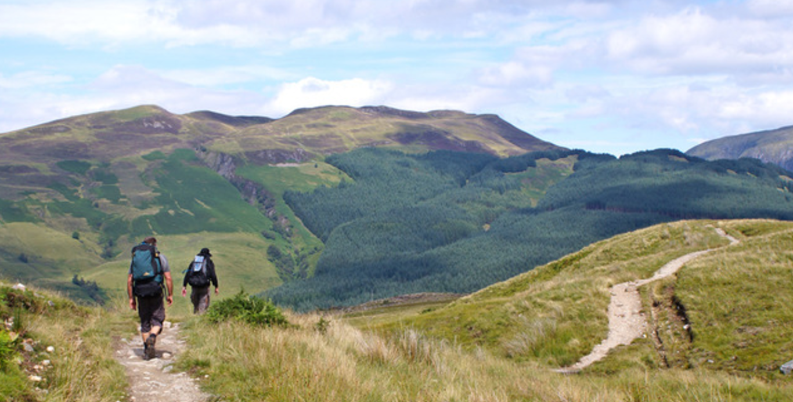

CURSA DE POLICIA
DE CATALUNYA
Vic - Osona, Catalunya | Barcelona
10 km en 37 min. 51 s.
VI CURSA DE MUNTANYA
PEDRAFORCA-SALDES
Montaña en Saldes, Catalunya | Barcelona
14.2 km en 2 h. 20 min. 15 s.
MARATON INTERNACIONAL
ZARAGOZA
Zaragoza, Aragón | Zaragoza
42.2 km en 2 h. 52 min. 18 s.